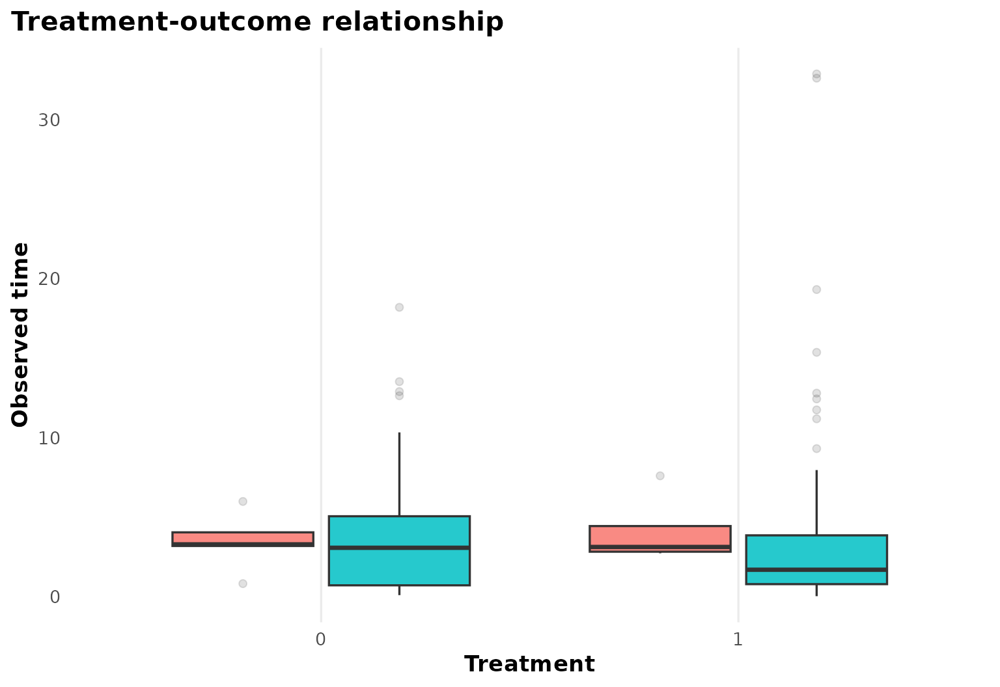
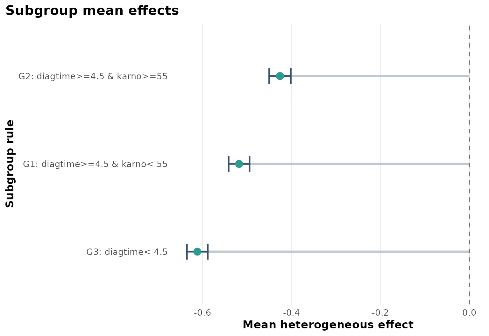
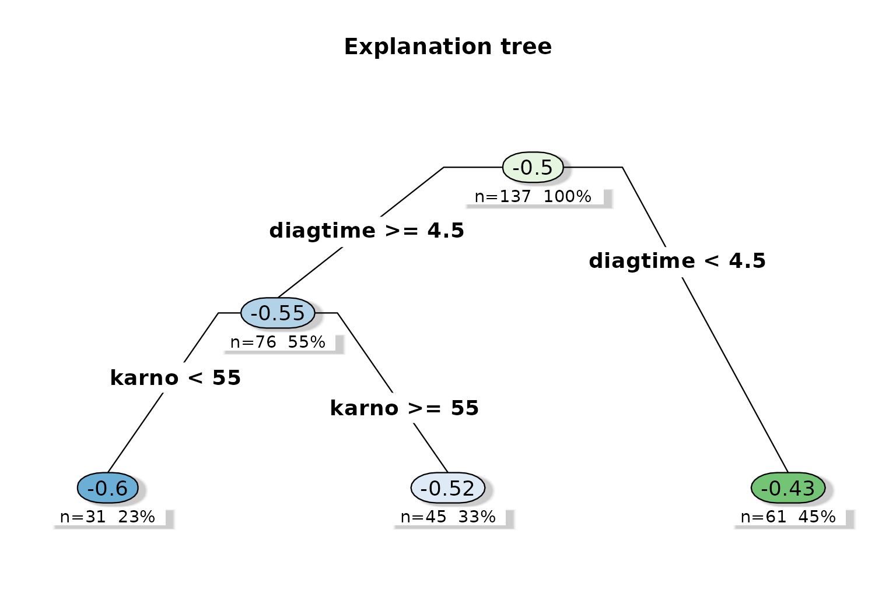
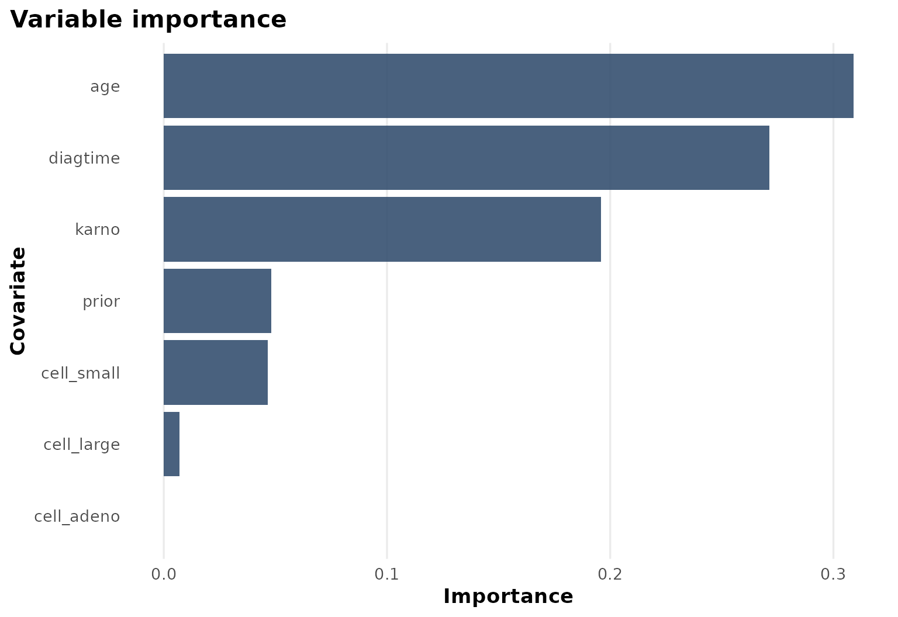

Case Study: Veteran survival
case-study-veteran.RmdBackground
survival::veteran is a compact clinical survival dataset
with treatment, follow-up time, event status, and baseline prognostic
variables such as performance status and diagnosis time.
Objective
The main question is whether the treatment effect on survival differs across baseline prognosis strata.
At horizon months, the analysis targets a subgroup-specific survival effect:
under the RMST target used by the package default.
Analysis setup
dat <- prepare_case_veteran()
fit <- fit_survival_forest(
data = dat,
time = "time",
event = "event",
treatment = "treatment",
covariates = setdiff(names(dat), c("sample_id", "time", "event", "treatment")),
sample_id = "sample_id",
horizon = 6,
seed = 123,
num_trees = 400,
tree_minbucket = 25
)
fit$check_table
#> check_name value status
#> 1 rows_used 137.00000000 info
#> 2 rows_dropped_missing 0.00000000 ok
#> 3 outcome_sd 5.19133954 ok
#> 4 treatment_sd 0.50182150 ok
#> 5 treatment_rate 0.49635036 info
#> 6 covariate_count 12.00000000 info
#> 7 event_rate 0.93430657 ok
#> 8 censor_rate 0.06569343 info
#> 9 horizon 6.00000000 info
fit$subgroup_table
#> subgroup rule n effect_mean effect_low effect_high
#> 1 G1 diagtime>=4.5 & karno< 55 45 -0.5177816 -0.5412978 -0.4942655
#> 2 G2 diagtime>=4.5 & karno>=55 61 -0.4258295 -0.4500205 -0.4016384
#> 3 G3 diagtime< 4.5 31 -0.6117136 -0.6351739 -0.5882533Design view

For survival settings the same baseline-adjustment idea applies, but the outcome is now right-censored time-to-event data rather than a scalar endpoint.
Treatment and observed time

This figure shows the observed-time distribution by treatment, including the event/censoring split.
Heterogeneous effect summary

The subgroup summary suggests that treatment benefit is not uniform. Baseline diagnosis time and Karnofsky performance status drive the main separation.
Explanation tree
plot_effect_tree(fit)
The tree shows a clinically interpretable pattern: prognosis variables organize the treatment-effect surface, and the lowest-performance groups are separated from better-functioning groups.
Variable importance

The importance chart reinforces that age, diagnosis time, and Karnofsky score carry most of the heterogeneity signal.